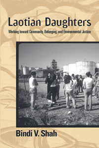

<body bgcolor="#FFFFFF" text="#000000" link="#0000FF" vlink="#CC0000" alink="#CC0000"><center><hr width="350" size="1" align="center" noshade>How environmental activism in youth shapes political engagement and citizenship for Laotian American women<hr width="350" size="1" align="center" noshade><p><a href="https://cdcshoppingcart.uchicago.edu/Cart/ChicagoBook.aspx?ISBN=9781439908136&&PRESS=temple" target="_top">Buy this book!</a> | <a href="https://cdcshoppingcart.uchicago.edu/Cart/Cart.aspx?PRESS=temple" target="_top">View Cart</a> | <a href="https://cdcshoppingcart.uchicago.edu/Cart/Cart.aspx?PRESS=temple" target="_top">Check Out</a></p><p></p></center><!--none//--><h1>Laotian Daughters</h1>
<H2>Working toward Community, Belonging, and Environmental Justice</H2>
<h3>Bindi V. Shah</h3>
<P>cloth 1-43990-813-3 $90.50, Dec 11, <FONT COLOR=#990033>Available</FONT>
<br>paper 1-43990-815-X $30.95, Dec 11, <FONT COLOR=#990033>Available</FONT>
<br>Electronic Book 1-43990-816-8 $30.95 <FONT COLOR=#990033>Available</FONT>
<BR> 216 pp
6x9
1&nbsp;table
</P><h3 align="center"><P><font color="#996633">Association for Asian American Studies' Outstanding Book Award in the category Social Science,
2014</font></P>
<P><font color="#996633">Honorable Mention, Asia and Asian America Section of the American Sociological Association,
2013</font></P>
</H3>
<BLOCKQUOTE><I>"Bindi Shah has written a lively and perceptive account of Laotian American youth, who were legacies of war and displacement but came of age through community organizing. This much-needed book reminds us that movement activism does more than counter injustice; it produces new knowledge, new subjectivities, and emergent cultures."</I>
<BR>&#151<B>Scott Kurashige</B>, author of <I>The Shifting Grounds of Race: Black and Japanese Americans in the Making of Multiethnic Los Angeles</I></I></BLOCKQUOTE>
<p><i>Laotian Daughters</i> focuses on second-generation environmental justice activists in Richmond, California. Bindi Shah's pathbreaking book charts these young women's efforts to improve the degraded conditions in their community and explores the ways their activism and political practices resist the negative stereotypes of race, class, and gender associated with their ethnic group.
<p>Using ethnographic observations, interviews, focus groups, and archival data on their participation in Asian Youth Advocates&#8212;a youth leadership development project&#8212;Shah analyzes the teenagers' mobilization for social rights, cross-race relations, and negotiations of gender and inter-generational relations. She also addresses issues of ethnic youth, and immigration and citizenship and how these shape national identities.
<p>Shah ultimately finds that citizenship as a social practice is not just an adult experience, and that ethnicity is an ongoing force in the political and social identities of second-generation Laotians.
<BR>&nbsp;<h2>Excerpt</h2><P>Excerpt available at <a href="http://www.temple.edu/tempress">www.temple.edu/tempress</a></p>
<BR>&nbsp;<h2>Reviews</h2>
<p><i>"</i>Laotian Daughters<i> convincingly argues that children of refugees embody a pivotal social location that allows for deeper, more complex insights into such pressing issues as cultural citizenship, political belonging, and national identity. Shah’s weaving together of social scientific research, cultural studies, and literary analysis is seamless. I am particularly excited by the incorporation of environmental justice literature into this mix, which is rare. The book’s greatest strength remains the young activists whose stories bring this book to life. </i>Laotian Daughters<i> is part of an important, growing intellectual body of research on the U.S. second generation, and this ethnographic study of Laotian teenagers fills a significant niche."</i><br>&#151<b>Lisa Sun-Hee Park</b>, Professor of Sociology at the University of Minnesota, and author of <i>Consuming Citizenship: Children of Asian Immigrant Entrepreneurs</i>
<p><i>"</i>Laotian Daughters<i> tells an interesting tale about a handful of Laotian teens, who have an opportunity to hone their evolving political sensibilities in the company of others. Shah’s effort to 'explore identity based on politics rather than politics based on identity' is nuanced and rich. She successfully documents the complex divisions among a group of girls who, despite similar struggles, connect and incorporate ethnic, class, generational, and cultural diversity into their identities differently."</i><br> &#151<b>Mobilization</b>
<p><i>"The book demonstrates quite effectively how environmental justice activism bridges questions of citizenship, rights, race, culture, and national identity.... [T]he best part of the book [is] the careful parsing of the potentiality and limitations of Asian Youth Advocates’s [AYA] intervention into the teens’ political subjectivity. [Shah] demonstrates the contradictions between prevailing liberal models of citizenship and existing inequalities based on group membership, as well as the partial and contingent success of AYA’s campaign to empower these young women."</i><br>&#151<b><i>American Journal of Sociology</i></b>
<p><i>"The book guides readers through dense explorations on the intersection of race, identity, citizenship, and power—but it is the girls’ stories that breathe life into the book…. On balance, </i>Laotian Daughters<i> makes a compelling case for the power of critical incorporation. The book offers an engaging account of how a group of disadvantaged girls draws on the resources provided by their social activism on the road to 'becoming American.' Shah provides a thickly described ethnography that shows how environmental activism interacts with a number of forces (family, school, friends, the media) to delineate national, gender, and racial and ethnic boundaries.... [S]cholars of immigration, citizenship, and identity will find much to appreciate in this work."</i><br> &#151<b>Contemporary Sociology</b>
<p><i>"Shah's book takes what seems to be a very narrow project and makes it a very important and broad one that has much utility for scholars working across many fields: sociology of immigration, intra and interethnic relations, youth and gender, refugee and American identity formation and critical citizenship studies, leadership development and environmental justice and urban activism. Her in-depth account of second-generation Laotian teenage girls in an environmental justice organization succeeds in articulating their struggle to challenge 'what it means to be American and are becoming American in the process.' Last, this book is well written and highly readable, and recommended for teaching in both undergraduate and graduate contexts in sociology."</i><br> &#151<b>Social Forces</b>
<BR>&nbsp;<h2>Contents</h2><P>
<p>Acknowledgments
<br>1. “Where We Live, Where We Work, Where We Play, Where We Learn”: The Asian Pacific Environmental Network
<br>2. From Agent Orange to Superfund Sites to Anti-immigrant Sentiments: Multiple Voyages, Ongoing Challenges
<br>3. New Immigration and the American Nation: A Framework for Citizenship and Belonging
<br>4. The Politics of Race: Political Identity and the Struggle for Social Rights
<br>5. Negotiating Racial Hierarchies: Critical Incorporation, Immigrant Ideology, and Interminority Relations
<br>6. Family, Culture, Gender: Narratives of Ethnic Reconstruction
<br>7. Building Community, Crafting Belonging in Multiple Homes
<br>8. Becoming “American”: Remaking American National Identity through Environmental Justice Activism
<br>Appendix: Socio-demographic Information on Second-Generation Laotians Who Participated in the Study
<br>Notes
<br>References
<br>Index
</P><BR>&nbsp;<H2>About the Author(s)</H2>
<P><b>Bindi V. Shah</b> is Lecturer in Sociology at the University of Southampton, United Kingdom.</P>
<BR><H2>Subject Categories</H2>
<p><A HREF="/tempress/asian_amer.html" TARGET="_top">Asian American Studies</a>
<BR><A HREF="/tempress/sociology.html" TARGET="_top">Sociology</a>
<BR><A HREF="/tempress/women.html" TARGET="_top">Women's Studies</a>
</p>
<BR><h2 class="inpageheading">In the series</H2>
<P><I><a href="http://www.temple.edu/tempress/asam_history.html" onMouseOver="window.status='Click for other books in this series!'; return true;" onMouseOut="window.status=''; return true;" target="_top">Asian American History and Culture</a></i>, edited by K. Scott Wong, Linda Trinh Võ, and Cathy Schlund-Vials.
</p><p>Founded by Sucheng Chan in 1991, the <I>Asian American History and Culture</I>, series has sponsored innovative scholarship that has redefined, expanded, and advanced the field of Asian American studies while strengthening its links to related areas of scholarly inquiry and engaged critique. Like the field from which it emerged, the series remains rooted in the social sciences and humanities, encompassing multiple regions, formations, communities, and identities. Extending the vision of founding editor Sucheng Chan and emeriti editor Michael Omi and David Palumbo-Liu, series editors K. Scott Wong, Linda Trinh Võ, and Cathy Schlund-Vials continue to develop a foundational collection that embodies a range of theoretical and methodological approaches to Asian American studies.</p>
<p align="center"><a href="https://cdcshoppingcart.uchicago.edu/Cart/ChicagoBook.aspx?ISBN=9781439908136&&PRESS=temple" target="_top">Buy this book!</a> | <a href="https://cdcshoppingcart.uchicago.edu/Cart/Cart.aspx?PRESS=temple" target="_top">View Cart</a> | <a href="https://cdcshoppingcart.uchicago.edu/Cart/Cart.aspx?PRESS=temple" target="_top">Check Out</a></p><p><font face="Arial" size="1"><a href="copyright.html" onMouseOver="window.status='Web Copyright Policy';return true;" onMouseOut="window.status=''" title="Web Copyright Policy">&copy;</a> 2015 <a href="http://www.temple.edu" target="new" onMouseOver="window.status='Link to Temple University home page';return true;" onMouseOut="window.status=''" title="Link to Temple University home page">Temple University</a>. All Rights Reserved. http://www.temple.edu/tempress/titles/2184_reg.html</font></p>